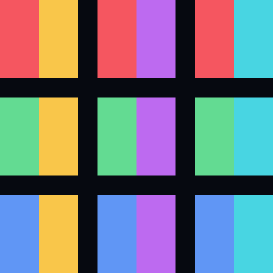
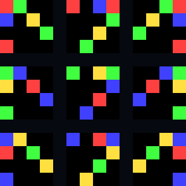
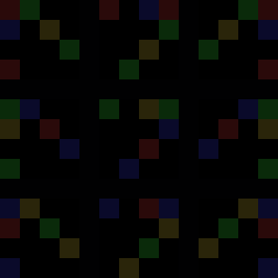

成功
VP028 — ただの語の並びから九つの未経験画像

九つの未経験要求（配置のみ）

経験から成立すべき九画像

ただの語の並びと隣接で実形成
期待との差（ゼロなら黒）

観測: 意味関係・節・構文木を要求側から渡さず、普通の語の短い並びと実際の隣接だけから、九つの未経験な色×姿勢の組合せをすべて正確に画像化しました。同じ曖昧語は左右の隣接文脈へ同時参加できます。
本線へ返す候補圧力: 新しい視覚的圧力は露出しませんでした。
実行情報: {"causal_clause_object_count": 0, "exact_scene_count": 9, "heldout_scene_count": 9, "neutral_separator_breaks_only_pose_context": true, "neutral_separator_breaks_only_rich_context": true, "opaque_whole_domain_spelling_changes_output": false, "parser_used": false, "planner_used": false, "request_boundary": "plain-linear-surface", "request_grid_is_presentation_only": true, "same_ambiguous_word_context_count": 2, "score_used": false, "selector_used": false, "semantic_context_edge_count": 0, "sense_registry_used": false, "source_ia": "IA2319", "syntax_tree_used": false, "whole_surface_reversal_changes_output": false}